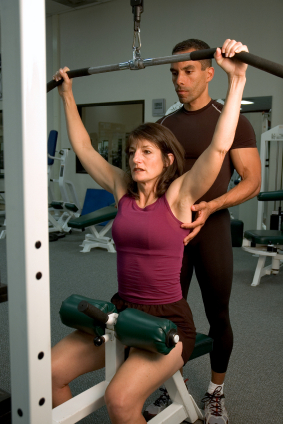

Enciclopedia Salud: ¿Qué es el fitness?

Categorías Definiciones Publicidad
Deporte
¿Qué es el fitness?
El fitness es una actividad física realizada de forma repetida (varias veces por semana) que tiene el objetivo de que nos sintamos mejor, tanto física como psicológicamente. En fitness también se cuida la alimentación y se supervisa la salud. Se realiza en un gimnasio que tenga sala de musculación.
Los 5 componentes básicos del fitness son:
1.- Mejorar la resistencia aeróbica. Para ello se trabaja con ejercicios fraccionados al menos varias veces por semana.
2.- Obtener una resistencia muscular localizada. Se usan pesas o aparatos. Este tipo de resistencia permite a un músculo repetir un movimiento y mantener una tensión durante cierto tiempo. Se hacen repeticiones de 10 a 20 ejercicios en 3 o 4 series.
3.- Conseguir fuerza muscular. Es la capacidad que tiene un músculo para efectuar mucha tensión. Esto se consigue mediante la realización de ejercicios de fuerza máxima, trabajando con cargas en la sala de musculación. Se hacen varias series, descansando un minuto o más después de cada serie.
4.- Tener mayor flexibilidad corporal. Se realizan ejercicios de movilidad articular para que las articulaciones no pierdan recorrido.
5.- Lograr un equilibrio armonioso de la estructura corporal. Se han de respetar los porcentajes considerados sanos de músculos, grasas y huesos (que son distintos en el hombre y en la mujer).
El fitness consigue no solo un bienestar físico, sino que también aumenta la autoestima y hace que nos sintamos psicológicamente mejor.
Más información en Wikipedia
Copyright © Classe Qsl - Editorial 3Temas. Todos los derechos reservados. Prohibida la reproducción total o parcial de este artículo en otro medio de comunicación sin el permiso expreso de Classe Qsl. Artículo escrito por la redacción de Classe Qsl . Última revisión: 9 de octubre de 2007.
Ver también: Beneficios del ejercicio cardiovascular
Evolución del ejercicio físico en la sociedad moderna
Wellness, la integración de la salud física, psíquica y emocional
Más información en:
Medypsi - Noticias de Medicina y Psicología Con audio! Lee o escucha las noticias, lo que prefieras.
Publicidad ¿Qué es la Enciclopedia Salud? Contactar Enlaces Información legal Copyright Política publicitaria